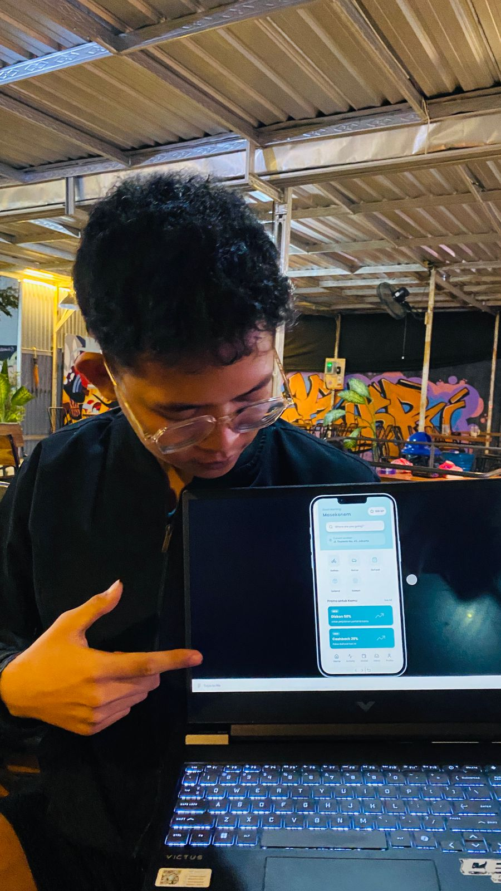

GoRide
Platform transportasi cerdas yang mengutamakan kepastian waktu untuk menjamin kelancaran mobilitas harian Anda.


Platform transportasi cerdas yang mengutamakan kepastian waktu untuk menjamin kelancaran mobilitas harian Anda.
Aplikasi GoRide dirancang untuk mereduksi waktu tunggu dengan tingkat presisi maksimal. Visi utamanya sangat jelas: Memastikan Anda tiba di lokasi tujuan sesuai rencana tanpa keraguan estimasi.
Durasi Proyek
4 Minggu Sprint
Tools Pendukung
Figma Ecosystem
Pendekatan Desain
Design Thinking
Studi kasus ini lahir dari keluhan masyarakat mengenai ketidakpastian estimasi waktu tiba pada layanan ride-hailing saat ini. Kegagalan memprediksi waktu secara akurat seringkali menjadi faktor utama rusaknya susunan agenda penting para pengguna.
Menyelami pengalaman langsung dari sisi pengguna untuk memetakan titik masalah (pain points) saat mereka bergantung pada transportasi online.
Mengerucutkan inti dari keresahan pengguna yang telah dievaluasi untuk menetapkan arah utama perancangan solusi.
Audiens sangat membutuhkan data estimasi durasi dan tarif yang presisi serta terbuka untuk mencegah konsekuensi buruk dari keterlambatan jadwal krusial mereka.
“Bagaimana cara kita membangun sebuah mekanisme yang dapat menjamin keakuratan waktu perjalanan, sehingga pelanggan leluasa mengatur jadwal harian mereka secara aman?”
Mengacu pada kuadran evaluasi "Do It Now" di Impact Matrix, pengerjaan difokuskan pada gagasan bernilai guna tinggi:
Mengonversi rumusan masalah dan HMW menjadi ide-ide fitur yang konkret, lalu memetakannya menjadi sistem arsitektur antarmuka.
Simulasi interaktif dari antarmuka GoRide.
Simulasi interaktif dari antarmuka GoRide.

Profil Partisipan Uji
Pengguna Rutin Transportasi Online
“Flow aplikasinya lancar, tampilan jarak dan waktu armada sangat membantu mengambil keputusan saat terburu-buru.”
| Skenario Tugas | Hasil | Observasi Analis |
|---|---|---|
| Identifikasi Posisi Driver | ✓ Tercapai | Navigasi visual intuitif memudahkan pengguna melacak armada secara akurat tanpa hambatan kognitif. |
| Optimalisasi Input Destinasi | ✓ Tercapai | Fitur auto-suggest berhasil memangkas durasi interaksi manual dan meminimalisir kesalahan penulisan alamat. |
| Validasi Estimasi Kedatangan | ✓ Tercapai | Penyajian rentang waktu (range) meningkatkan kepercayaan pengguna dan menciptakan ekspektasi tunggu yang lebih realistis. |
“Akses untuk membatalkan pesanan di tengah jalan rasanya masih agak tersembunyi, bikin kurang leluasa kalau salah input.”
Kondisi Awal: Menu "Cancel" berada di dalam pop-up panel yang harus di-swipe ke atas terlebih dahulu.
Realisasi: Mengekstrak fungsi pembatalan menjadi tombol independen (floating/utama) di layar pencarian armada.
Evolusi dari pendekatan solusi antarmuka GoRide di atas mampu memecahkan masalah kecemasan operasional pelanggan. Integrasi pelacakan prediktif ini berimplikasi positif terhadap perbaikan manajemen waktu komuter sehari-hari.
NIM. 253307030